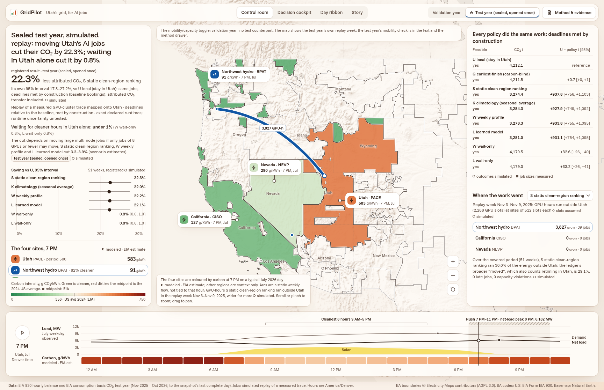

When and where should a Utah AI job run? We measured which lever matters.
A day-ahead traffic report for the grid, plus a router for AI jobs, tested in a simulated replay on real Utah grid data and a real GPU-cluster trace.

Hard Tech Week 2026, Torus bounty: Energy × AI infrastructure
GridPilot is a day-ahead traffic report for the grid, plus a router for AI jobs, tested in a simulated replay on real Utah grid data and a real GPU-cluster trace.
First click: set the dashboard to Test year once. Every "Open in dashboard" button reuses that same tab (window "gridpilot"), so the switch stays on Test year. Dashboard: http://127.0.0.1:4173/ (cd web && npm run preview).
As solar fades, Utah's net load peaks in the evening; the clean hours aren't the rush hours.
net-load peak at 8 PM, mean of July 2026 weekdays in PACE, the balancing area serving much of Utah. Demand itself peaks at 5 PM.
Validation year: in 9 of 10 US regions we profiled, the rush hours are dirtier than average; Bonneville's are cleaner (−8.0%).
Evening rush: the hours holding at least 10 of the test year's 100 highest net-load hours, as in the dashboard's rush strip.
This is Utah's grid, PACE, which serves much of Utah, on an average July weekday of our sealed, 358-day test year. Demand peaks around five. As solar fades, net load, what the rest of the fleet must carry, climbs to about sixty-two hundred megawatts at 8 PM: the grid's rush hour. In our validation year, nine of ten US regions had dirtier rush hours; Bonneville was the exception.
Picture a hypothetical 2,300-GPU AI cluster here. Our goal: cut the CO₂ attributed to its work, same work, same deadlines.
First click on "Open in dashboard": set the switch to Test year once; later clicks reuse that tab. "As solar fades", never "after sunset". The cluster size (2,288 GPUs, about 1.6 MW fully busy) is assumed.
For a big training job, waiting buys almost nothing; moving changes everything.
Job 5930563#c5 from a public GPU-cluster trace, replayed onto Utah: 72 GPUs, 104 hours of pre-training.
Runs as booked, on Utah's grid.
The wait-only policies kept its booked start: 6 hours of allowed delay buys almost nothing against a 104-hour run.
30 minutes of transfer, then a hydro-heavy grid. Placed before it starts; nothing migrates mid-run.
One real job from a public GPU-cluster trace, replayed onto Utah: 72 GPUs, 104 hours of pre-training.
Stay: about twenty-one hundred kilograms of attributed CO₂.
Wait: it may start up to six hours late, which buys almost nothing against a 104-hour run.
Move: half an hour of transfer, then the Northwest's hydro-heavy grid, about 360 kilograms. Moving means placing a job before it starts; nothing migrates mid-run.
Picked by a rule fixed before its outcome was seen (GPU-hour-weighted median, D-054); on the test year that is #c5, not the validation #c3. Don't quote the Decision cockpit's typical-day number.
Forecast tomorrow, route each job, replay the year, count every kilowatt-hour.
EIA-930 hourly grid data and EIA hourly CO2 estimates, plus the Acme GPU-cluster trace.
Only data published under assumed EIA delays: 2 h demand, 48 h wind and solar, 96 h carbon.
Stay, wait or move. Every site has finite spare GPUs; every move pays a transfer delay and energy.
A gang-job simulator runs every policy on identical work, Utah's slot kept as each job's fallback.
Every number is observed, measured, modeled, forecast, assumed or simulated, and traces to a run.
Sealed test year: 358 days, opened once after a tagged freeze; 69 logged reads. 888,224 jobs replayed.
AI agents helped build and review it. We froze the configuration before opening the holdout once; the routing policy remains a fixed ranking.
We replayed 888 thousand jobs against hourly EIA carbon data, in a simulated replay. AI agents helped build and review it. We froze the configuration before opening the holdout once; the routing policy remains a fixed ranking.
If asked: every number carries a label: observed, measured, modeled, forecast, assumed or simulated. The test year stayed sealed until the configuration was frozen; only completeness counts were taken before.
less attributed CO2 on the sealed test year: policy S, the fixed clean-region ranking, against every job staying in Utah.
Its own 95% interval 17.3–27.2%
validation 22.6%
If only jobs of ≤ 8 GPUs may move:
3.2% [1.9, 4.7] test year; validation 3.2%
Saving vs every job staying in Utah, each policy's own 95% interval
Test year, 4-week blocks. Waiting in Utah alone: under 1% (0.8%). 70% of the work S ran outside Utah ran in the Northwest.
Simulated replay · 358 days · attributed (EIA consumption-basis) emissions, not avoided · deadlines met by construction (baseline bookings) · exact declared runtimes; runtime uncertainty untested.
That fixed clean-region ranking, policy S, cut attributed emissions 22.3 percent, interval 17.3 to 27.2. Validation was 22.6. Waiting in Utah alone: under 1 percent. 70 percent of the work that left Utah ran in the Northwest.
These are attributed emissions, not avoided. Deadlines are met by construction, through baseline bookings, with exact declared runtimes.
Forecast-based search showed no demonstrated aggregate routing benefit over the fixed ranking in this replay. So the ranking is the baseline to pilot, if the big jobs can move.
The interval is S's own estimate, never a span across policies. Never "a full year", "30×", "deploy", "simple rules beat AI". "Isn't 3.9 better than 3.2?": qa.md #4.
The saving lives in a few large jobs. If they can't move, most of it goes.
The largest 1% of jobs use 95% of the energy
Test year, jobs ranked by declared GPU-hours (validation 94%).
Other changes move the result much less: a two-hour transfer still gives about 20%; twice the spare capacity, 35%. Both years agree.
S's saving vs every job staying in Utah, by which jobs may move
Blue: test year with its 95% interval; grey: validation. The forecast policies, which can also wait, reach 3.9% when only small jobs move.
In this workload, the largest 1 percent of jobs use 95 percent of the energy.
If only jobs of 8 GPUs or fewer may move, S's saving falls from 22.3 percent to 3.2; the forecast policies, which can also wait, reach 3.9. Our 72-GPU job would stay home.
Other changes matter much less: a two-hour transfer still gives about 20 percent; twice the spare capacity, 35. Both years agree.
So whether large training jobs can move is the lever. Here it's an assumption, not a measurement.
Say "ran outside Utah", not "moved". Validation was 22.6 → 3.2 [2.1–4.5]; only if asked.
Aim the battery at carbon or at Utah's tightest hours, not both. An illustrative 4 MWh / 1 MW battery at the Utah site, on two fixed schedules registered before the test year was opened.
| Test year, every job in Utah | Aimed at carbonthe headline schedule | Aimed at the tightest hourspeak-aimed schedule (D-073) |
|---|---|---|
| Cut in the cluster's attributed CO2 | 4.0% | 1.0% |
| On a flat marginal basis, storage losses | add about 107 t CO2 | add about 77 t CO2 |
| Average draw in Utah's 14 tightest hours (net load ≥ 7,207 MW) | 0.88 → 0.55 MW 6 of 14 hours discharging | 0.88 → 0.32 MW 10 of 14 hours discharging |
| The site's yearly peak draw | 1.64 → 1.65 MW: charging fills the connection | 1.64 → 1.65 MW: the same |
Moving the router's work also adds 0.20 MW in Bonneville and 0.04 MW in California during Utah's tightest hours.
What about the work that can't move? We put an illustrative 4 megawatt-hour, 1 megawatt battery at the Utah site, with two fixed schedules registered before we opened the test year.
Aimed at carbon, it cuts the cluster's attributed CO₂ about 4 percent, but on a flat marginal factor its losses add about 107 tonnes.
Aimed at the rush, Utah's 14 tightest hours, it cuts the cluster's average draw from 0.88 to 0.32 megawatts, but CO₂ by only 1 percent. Neither lowers the site's yearly peak: charging fills the connection.
So aim the battery at carbon or at the rush, not both. Seconds-scale buffering is outside our hourly model; that's the next interface.
Flat marginal basis: every kWh of storage's net draw priced at 618 g/kWh, an associational regression slope (PACE ΔCO₂/Δnet load), not a causal marginal factor; a threshold scenario. "Tightest hours" are the 14 test-year hours at or above the training years' top-1% net load (7,207 MW), not slide 2's evening rush (7–11 PM). Validation: carbon schedule 3.5%. Never call the hindsight heuristic a bound; don't name Torus products as modeled; no price on MW.
What an operator does tomorrow
Measure which real jobs can move: checkpointing, data size, residency. Mobility decides the result.
Policy S is the baseline to pilot: 22.3% on the test year, 3.2% if only small jobs move.
For the residual Utah load: 0.83 MW in the tightest hours if only ≤ 8-GPU jobs move (forecast policy W).
LimitsSimulated replay; mobility assumed; no reservation-free or runtime-overrun test. Cost only as a wholesale scenario, validation year: moving costs +7–9% vs every job in Utah, about $21 per attributed tonne.
NextMeasure which real jobs can move, with an operator; couple the router's residual Utah load to storage dispatch; with a storage partner, test seconds-scale buffering on measured cluster power.
In a simulated replay of a sealed test year, a fixed clean-region ranking cut the attributed emissions of the same work 22.3 percent, and 3.2 if only small jobs can move. Every assumption is one click away.
For an operator: first find which work can move. Then size storage for the Utah load that can't, aimed at carbon or at the rush. The fixed ranking is the baseline to pilot. Thank you.
Q&A: appendix slides follow (key 9). One click away: the Control room's policy table, the method drawer's test-year sections, Outlook, Prices (validation, wholesale scenario), Regions (validation).
Appendix, for Q&A
| S vs every job in Utah, 4-week blocks | Validation | Test (sealed) |
|---|---|---|
| Production-basis repricing | 25.5% | validation only |
| Observed hours only (common support) | 22.5% | validation only |
Rows 2–8: one-axis scenarios, pre-registered secondary runs on both years (D-071). The last two rows are validation only. Scenario estimates, not a confidence interval.
Phases 49/98, 2 h transfer, 24 h delay, capacity 0 and 1,024, mobility ≤ 8 GPUs. Production-basis and observed-hours-only rows are validation only.
Appendix, for Q&A
| S vs every job in Utah, generation-associated water | Validation | Test (sealed) |
|---|---|---|
| Without hydro evaporation | −20.5% | −18.6% |
| With hydro evaporation | +145% | +174% |
No water-saving claim. Source: results/test/extras.json water.policies.S.change_vs_U; results/water.json.
Appendix, for Q&A
* Errata: the frozen results/test/manifest.json still reads "pending" for these two lines, written before the extras ran (audit F16). The results file is not edited.
The claim frame is verbatim; limitations are restated as the dashboard does, with the two errata.
Appendix, for Q&A
data/.wtest file created and deleted by a reviewer, changing only the directory's mtime (D-074).Every read is logged with its input, code and config hashes and its purpose.
Appendix, for Q&A
| Source | Licence |
|---|---|
| EIA-930 hourly balance and EIA hourly CO2 estimates | U.S. Government work, public domain |
| Acme GPU-cluster trace, Seren cluster | CC BY 4.0 |
| Open-Meteo archived forecasts (toughest-days case study) | CC BY 4.0: Weather data by Open-Meteo.com |
| NREL and LBNL water factors | DOE national-laboratory reports, cited |
| CAISO/WEIM real-time LMPs (wholesale scenario, not a bill) | CAISO OASIS public market data |
| Electricity Maps balancing-area boundaries | AGPL-3.0 |
| Natural Earth | Public domain |
| Funnel Sans and Funnel Display, embedded in this deck | SIL Open Font License 1.1 |
Each download's URL, retrieval time, sha256 and licence are in data/manifests/. No partnership with Torus is implied.